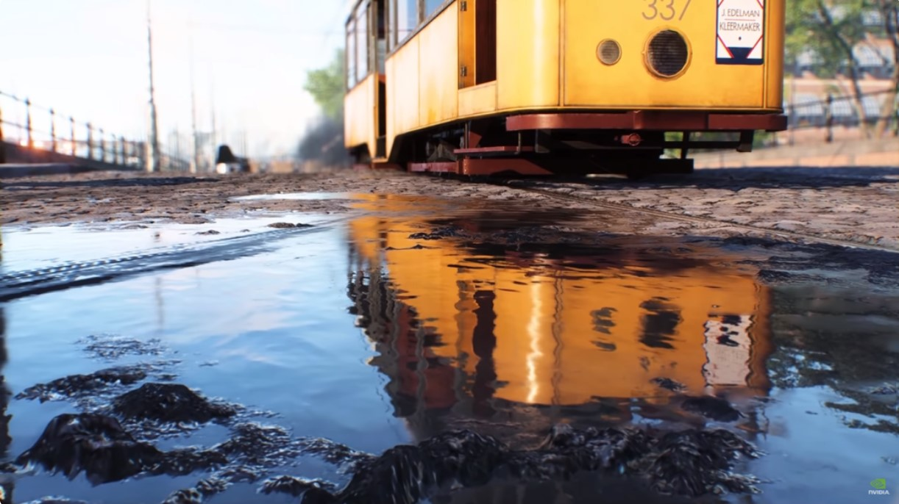
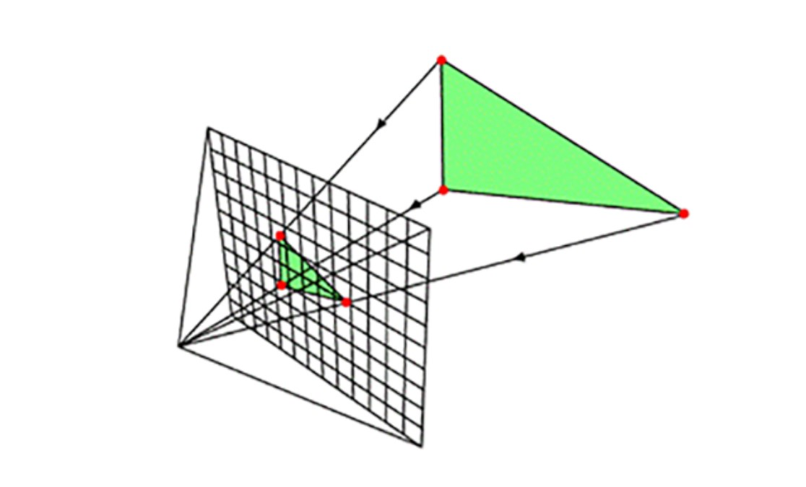
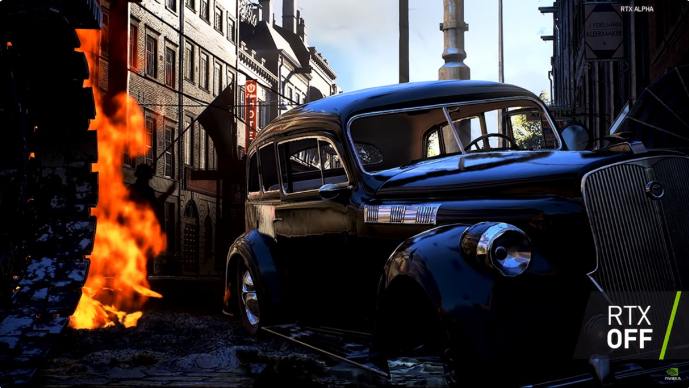
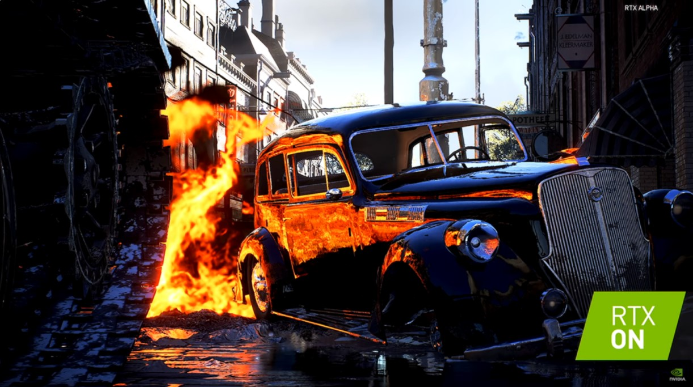

O que é Ray Tracing?
O Ray Tracing, tecnologia que usa “traçados de raios” para criar melhores efeitos de luz, não é bem uma novidade criada só agora para deixar os jogos mais realistas. A técnica existe há anos no cinema, mas ainda não podia ser aplicada, em tempo real, em games por limitações técnicas até então.
A Nvidia trouxe o Ray Tracing para os games, com a chegada das placas de vídeo da família GeForce RTX Série 20, baseadas na nova arquitetura Turing. As GPUs processam essa tecnologia em alto desempenho (com mais efeitos) e resolução, pois possuem núcleos próprios de Ray Tracing (RT Cores).
Isso é um grande diferencial se formos comparar, por exemplo, com algumas placas GTX (da mesma fabricante) e seus núcleos tradicionais, que rodam o Ray Tracing por emulação.
Essa tecnologia marca um novo passo na evolução dos jogos eletrônicos. E não estamos falando apenas de games para computadores. Sony e Microsoft já anunciaram que sua próxima geração de consoles terá suporte ao Ray Tracing. Mas afinal de contas, como esses tais “traçados de raios” funcionam?
O que é Ray Tracing
De forma resumida, o Ray Tracing aplicado em jogos (e com RT Cores) usa inteligência artificial para criar, em tempo real, efeitos de luz e sombreamentos mais reais. Isso também vale na hora de gerar reflexos, refrações e iluminação geral mais verossímil fisicamente. A ideia é tornar a sensação de olhar para a TV (ou monitor) a mais próxima possível da experiência de se olhar por uma janela, no mundo real.
Parte desse alto processamento é graças à nova arquitetura Turing, que traz desempenho seis vezes maior que sua antecessora: a Pascal – ambas pertencentes à Nvidia.
A Turing tem como promessa dar suporte para jogos em 4K e a 60 quadros por segundo, mesmo em games mais avançados. Além disso, ela permite que os sombreadores concentrem o processamento em áreas físicas com muitos detalhes, aumentando a performance geral.
Agora, de forma mais específica, o Ray Tracing vem para substituir (com o tempo ou até algo mais avançado aparecer) a técnica conhecida como Rasterização, usada para gerar aqueles gráficos “realistas” que todos amamos, mas que na verdade não passam de uma projeção 2D na tela de um ambiente 3D.
A Rasterização é um processo rápido e gera imagens de forma mais simples. Para quem joga faz um tempo, é fácil de lembrar da época em que os primeiros títulos em 3D eram bem quadradões e com técnicas de iluminação rudimentares. Às vezes, apenas alternando entre os tons das cores para dar uma ideia de sombreamento e profundidade.
É claro que isso mudou e melhorou (muito!) com o passar do tempo, mesmo sem o Ray Tracing ainda aplicado para jogos. Ao longo dos anos, várias técnicas foram criadas para dar uma polida no, não proposital, quase que constante visual estilo Minecraft.
Texturas de alta resolução, que já trazem muitos detalhes gravados, e “shadders” programáveis ajudaram, e ainda ajudam, a dar uma bela maquiada em todos os polígonos de um jogo.
Mas como dito antes, esses recursos (mesmo que eficazes, por vezes) ainda funcionam como ilusões e maquiagens nos games. Aplicar uma técnica de iluminação mais eficaz e natural a uma jogo parece coisa de cinema, e realmente é, só que agora não mais de forma exclusiva.
A tecnologia já foi usada, por exemplo, em produções como Exterminador do Futuro 2, Jurassic Park (o primeiro) e na animação Carros, da Pixar. A diferença, no caso do cinema, é que o “traçado de raios” é feito sobre imagens não interativas.
Mas como adaptar o Ray Tracing para um jogo?
Migrando para o universo dos jogos eletrônicos, passamos a lidar com variações de cor, luz, sombras e partículas sendo processadas em tempo real e de forma interativa. Ou seja, coisas podem explodir, se mover, aparecer, sumir e tudo isso gera perspectivas visuais diferentes.
Para o game manter a sensação de realismo, em nenhum momento uma sombra pode demorar demais para desaparecer (quando o objetivo que a gerava não está mais no lugar), por exemplo, ou todos os objetos parecerem feitos de cera, sem nenhum reflexo – mesmo sob um Sol brilhante.
O resultado final da utilização do Ray Tracing é incrível, mas é de se esperar que ele demande um poder de processamento gigantesco. No cinema, vários computadores são usados em conjunto e, mesmo assim, cada quadro pode levar horas para ser processado.
A técnica parecia ser muito pouco provável de chegar aos computadores domésticos e, consequentemente, aos jogos. Mas como condensar o trabalho de dezenas de computadores e ainda ter que lidar com o processamento, em tempo real, dessa iluminação?
O Ray Tracing adaptado para os games é resultado do trabalho de anos em engenharia de software. O desafio vencido foi o de criar ferramentas para levar essa técnica até os desenvolvedores de jogos. As novas placas de vídeo GeForce RTX, citadas antes, já são frutos desse esforço de engenharia e contam com um “super acelerador de raios” integrado.
 Gerar o Ray Tracing em tempo real é bem mais mérito do uso dessa técnica de forma inteligente do que desempenho da placa de vídeo. Mesmo com GPUs poderosíssimas, ainda não era possível gerar imagens, com o Ray Tracing, a 60 quadros por segundo.
O trabalho criativo desenvolvido foi encontrar uma nova abordagem para resolver essa questão. Com isso, ao invés de tentar fazer com que uma única placa processasse bilhões de raios (em tempo real, é bom lembrar), os engenheiros conseguiram usar somente um único raio por pixel. Quem faz o restante do trabalho agora é a inteligência artificial que “deduz” como seria a imagem final.
A tal inteligência artificial também ajuda a reduzir os ruídos da imagem, com o filtro “AI denoiser”, que acontecem ao se usar poucos raios. Dessa forma, a imagem apresentada tem a mesma qualidade de como se tivesse sido criada por milhares de raios por pixel.
E mais: usando o Ray Tracing, aliado à IA, é possível gerar efeitos de iluminação, reflexos e sombras até mesmo fora do raio de captura da câmera do jogo, por exemplo. Imagine poder enxergar um inimigo se aproximando (pelas suas costas) apenas olhando pelo reflexo da porta de um carro. A ideia é bem essa.
Confira, a seguir, a demonstração chamada “Back Stage”, da Luminous Productions, usando Ray Tracing:
Por fim, o Ray Tracing para jogos é uma realidade, mesmo sendo um pouco cara para o consumidor final neste primeiro momento. Afinal de contas, é preciso investir em uma placa de vídeo com a tecnologia e em todo um computador que suporte tal GPU (monitor ou TV 4K também, para ver os efeitos das luzes com fidelidade).
A diferença gráfica é mesmo absurda e, certamente, esta é um tendência que estará presente nos próximos games mais avançados e não mais só no cinema.